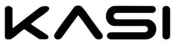

Trade Mark Journal No.2025/049 5 December 2025
UK00004295450 15 November 2025 (18,21,25,27,28,35,41)
Mark 1

Mark 2
- Class 18
- Bags; Tote bags; Luggage bags; Duffle bags; Duffel bags; Carry-on bags; Toiletry bags; Bags for clothes; Drawstring bags; Carry-all bags; Belt bags and hip bags; Carrying bags; Cross-body bags; Crossbody bags; Sling bags; Duffel bags for travel; Shoe bags; Clutch bags; Kit bags; Travel bags; Bags for travel; Messenger bags; Garment bags; Toilet bags; Shoulder bags; Make-up bags; Cosmetic bags; Waterproof bags; Reusable shopping bags; Umbrella bags; Towelling bags; Makeup bags; Bags for carrying pets; Travelling bags; Traveling bags; Overnight bags; Beach bags; Bags for climbers; Mesh shopping bags; Mesh bags for shopping; Boot bags; Bum bags; Wash bags for carrying toiletries; Suit bags; Waist bags. .
- Class 21
- Water bottles; Plastic water bottles; Aluminum water bottles; Siphon bottles for carbonated water; Siphon bottles for aerated water; Covers for water bottles; Bottles; Glass bottles; Siphons for carbonated water; Reusable stainless steel water bottles; Reusable plastic water bottles sold empty; Water flossers; Water bottles for bicycles, sold empty; Drinking bottles for sports; Water troughs.
- Class 25
- Clothing; Jackets [clothing]; Ready-to-wear clothing; Linen clothing; Headbands [clothing]; Gloves as clothing; Denims [clothing]; Shorts [clothing]; Parts of clothing, footwear and headgear; Knitted clothing; Hoods [clothing]; Windproof clothing; Corsets [clothing, foundation garments]; Embroidered clothing; Wristbands [clothing]; Belts [clothing]; Bandeaux [clothing]; Rainproof clothing; Waterproof clothing; Casual clothing; Jackets being sports clothing; Ready-made clothing; Jackets (Stuff -) [clothing]; Stuff jackets [clothing]; Playsuits [clothing]; Bottoms [clothing]; Clothing for leisure wear; Latex clothing; Trunks being clothing; Woven clothing; Drawers [clothing]; Leisure clothing; Clothing for sports; Sports clothing; Athletic clothing; Clothing for children; Bodies [clothing]; Tops [clothing]; Clothing for cycling; Weatherproof clothing; Pockets for clothing; Fabric belts [clothing]; Water-resistant clothing; Handwarmers [clothing]; Clothing for skiing; Thermal clothing; Men's clothing; Dance clothing; Socks; Socks and stockings; Slipper socks; Anklets [socks]; Toe socks; Ankle socks; Trouser socks; Sweat-absorbent socks; Non-slip socks; Anti-perspirant socks; Bed socks; Thermal socks; Yoga socks; Men's socks; Tennis socks; Socks for men; Sports socks; Water socks; Sock suspenders; Men's dress socks; American football socks; Slippers; Shoes; Leggings [trousers]; Woollen tights; Tongues for shoes and boots; Stockings (Sweat-absorbent -); Sweat-absorbent stockings; Stockings [sweat-absorbent]; Underwear; Legwarmers; Boy shorts [underwear]; Pullstraps for shoes and boots; Mittens; Fleece shorts; Stockings; Shoes for leisurewear; Sweaters; Slip-on shoes; Trousers shorts; Tights; Esparto shoes or sandals; Waterproof shoes; Underpants; Sandals and beach shoes; Hiking shoes; Foam pedicure slippers; Sneakers [footwear]; Rubber shoes; Underwear (Anti-sweat -); Anti-sweat underwear; Insoles for footwear; Shoe soles; Nappy pants [clothing]; Heel protectors for shoes; Slipper soles; Footwear soles; Soles for footwear; Waterproof pants; Shoes for foot volleyball; Foot volleyball shoes; Yoga shoes; Wooden shoes [footwear]; Sweat-absorbent underclothing [underwear]; Ankle boots; Sneakers; Jumpers [sweaters]; Jockstraps [underwear]; Sweat-absorbent underwear; Leather slippers; High-heeled shoes; Mountaineering shoes; Moisture-wicking sports pants; Soccer shoes; Sandals; Flip-flops for use as footwear; Hidden heel shoes; Capri pants; Boots; Fingerless gloves as clothing; Footless tights; Jogging shoes; Hats; Beanie hats; Toques [hats]; Bobble hats; Fascinator hats; Fashion hats; Sun hats; Ski hats; Bonnets; Headwear; Head scarves; Shawls and headscarves; Headbands; Gloves for apparel; Mitts [clothing]; Headgear; Jerseys [clothing]; Knit jackets; Golf clothing, other than gloves; Skirts; Dress pants; Tennis skirts; Dress shoes; Trousers; Dresses; Skorts; Vest tops; Sleeveless jackets; Bra straps; Casual trousers; Dresses for evening wear; Panties; Ski pants; Tennis dresses; V-neck sweaters; One-piece playsuits; Lounge pants; Sleeved jackets; Bra straps [parts of clothing]; Stockings (Heel pieces for -); Heel pieces for stockings; Knee-high stockings; Maternity shorts; Shorts; Jogging pants; Bra strap extenders.
- Class 27
- Yoga mats; Gymnastic mats; Gymnasium exercise mats; Mats; Gymnasium mats.
- Class 28
- Games, toys and playthings; video game apparatus; gymnastic and sporting articles; sporting equipment; gymnasium, sport and training equipment; balls; sport and game balls; Pilates toning balls; athletic exercise cones; sporting protective items being protective padding for wear during sport; athletic protective sportswear; weight lifting belts; athletic knee, elbow and wrist supports; boxing gloves; weight lifting gloves; padded lifting straps; punchbags and balls; lifting weights; exercise weights; leg, ankle and wrist weights; elbow guards; knee guards; shin pads; face masks for sports; benches for sporting use; grips for sporting articles; fist protectors; pads for use in sports; chest protectors for sports use; body protectors for sports use; face guards for sports use; shoulder pads for sports use; hand wraps for sports use; hand pads for use in sports; harnesses for use in sports; cases and bags adapted for sporting articles; leg guards adapted for playing sport; exercise balls; treadmills; exercise machines; cardio-vascular exercise machines; exercise bicycles; cross-trainer exercise machines; stepping exercise machines; exercise benches; exercise pulleys; exercise, yoga and Pilates blocks and straps; yoga swings; skipping ropes; exercise resistance straps and bands; swimming floats and rings, beach balls and inflatable beach balls; gym chalk for improving hand grip in sports activities; indoor fitness apparatus; apparatus for achieving physical fitness; shock absorption pads for protection against injury [sporting articles]; dumb-bells and barbells for weight lifting; back supports for weightlifters; machines incorporating weights for use in physical exercise; aerobic steps; abdomen protectors for athletic use; body-building apparatus; body training apparatus; body toner apparatus; head covers and gloves for use in sports; hoops for exercise; kettlebells; kick pads for martial arts; nets for sports; portable home gymnastic apparatus; body rehabilitation apparatus; relay batons; surfboards and body boards; pads for barbells; skateboards; squat racks; stomach exercisers; stress relief balls; swimming equipment; punching bags for boxing.
- Class 35
- Advertising, particularly services for the promotion of goods; loyalty, incentive and bonus program services; merchandising; product demonstrations and product display services; production of video recordings for marketing purposes; providing consumer product advice; promotion of goods and services through sponsorship; promotion of goods and services through sponsorship of sports, business and charitable events; promotional management for sports personalities and sports people; promotion of sports competitions and events; organisation of exhibitions and events for commercial or advertising purposes; organisation of exhibitions and events in the field of sports; import and export services; advertising services; organisation of trade fairs; retail, online retail, mail order and wholesale services, including temporary and 'pop-up' retail store services in connection with dietary and nutritional supplements and dietetic preparations, vitamin supplements, food supplements for sportsmen, sportswomen and athletes, food supplements in liquid form, protein supplements, protein supplement shakes, mineral nutritional supplements, nutritional supplement energy bars, fitness and endurance supplements, protein powder dietary supplements, nutritional supplement meal replacement bars for boosting energy, powdered nutritional supplement drink mix, nutritional drinks and drink mixes for use as a meal replacement, protein supplement drinks and powders, antioxidants, dietary supplement drinks, herbal supplements, meal replacement powders, mineral supplements, nutraceutical preparations for humans, first-aid kits, scientific, surveying, photographic, cinematographic, weighing, measuring, signalling, checking supervision, monitoring and teaching apparatus and instruments, sensors and detectors, apparatus for recording, transmission or reproduction of sound or images, recording discs, compact discs, DVDs and other digital recording media, calculating machines, data processing equipment, computer software, computer software applications, downloadable mobile applications, health monitoring software, downloadable videos, video recordings, downloadable video files, media content, downloadable videos and media in the field of sports, fitness, nutrition and health, pre-recorded videos, pre-recorded fitness DVDs, electrical and electronic apparatus and instruments for recording and measuring health and fitness parameters, computer software for providing information relating to fitness, calorie counting and step counting, multifunctional electronic devices to view, measure and upload to the internet information, including time, date, body and heart rate values, global positioning, direction, distance, altitude, cadence, speed, calories burned and steps taken, pedometers, calorie counting apparatus, heart-rate and fitness monitoring apparatus, mouth guards being gum shields, headphones, earphones, sunglasses and spectacles, frames and cases for sunglasses and spectacles, eyeshades, swimming goggles and swimming masks, straps, cases, covers and waterproof cases for mobile phones, tablet computers, computers, electronic devices and portable media players, protective and safety equipment, wearable activity trackers, skin moisture analyzers, not for medical purposes, testing devices, audio-visual teaching apparatus, electronic sports training simulators, massage apparatus, physiotherapy and rehabilitation equipment, foam massage rollers, compression bandages, compression garments, compression stockings, orthopaedic compression supports, limb compression instruments, body limb compression sleeves, compression socks for medical or therapeutic use, apparatus for electrical muscle stimulation, apparatus for the therapeutic toning of the body and muscles, therapeutic body toner apparatus, computer controlled exercise and training apparatus for therapeutic use, deep heat massage apparatus, electro-stimulation apparatus for use in therapeutic treatment, exercise apparatus for medical rehabilitative purposes, exercise machines for therapeutic purposes, hot therapy apparatus, nerve muscle stimulators, parallel bars for medical and therapeutic use, physical exercise apparatus for therapeutic use, step-up machines for use in physiotherapy, weight training apparatus adapted for medical use, supportive bandages, arch supports for flat feet, body limb compression sleeves for athletic use, elastic bandages, inserts and insoles for footwear for orthopaedic use, lumbar belts, tubular elastic bandages, jewellery, key rings, key chains, key chain charms, key fobs, leather and imitations of leather, luggage, trunks and travelling bags, suitcases, athletic bags, umbrellas and parasols, bags, bags for sport, gymnasium bags, mini-bags, tote bags, duffel bags, backpacks, bags for clothes, drawstring bags, holdalls, wash bags, beach bags, boot bags, cloth bags, cosmetic bags, toiletry bags, canvas bags, bum bags, beauty cases, belt bags and hip bags, purses and wallets, fitted protective covers for luggage, handbags, leather bags, luggage labels, luggage straps, luggage tags, shoe bags, shopping bags, animal apparel, animal leads, animal harnesses and collars, combs and sponges, brushes, except paintbrushes, unworked or semi-worked glass, except building glass, glassware, porcelain and earthenware, glasses, drinking vessels, bottles, drinks bottles, shaker bottles, running bottles, reusable plastic water bottles, sports bottles sold empty, reusable stainless-steel water bottles, cups, cup lids, fruit infuser bottles, flasks, bottle coolers, tableware, mugs, tumblers, bottles and tableware, bowls, plates, dishes, cool boxes, cool bags, ceramics for household purposes, crockery, chopping boards for kitchen use, cloths for eye-glasses, hairbrushes, golf brushes, bakeware, cookware, beverage coolers, biodegradable bowls, cups, plates, coasters, not of paper or textile, non-electric food and beverage coolers, insulated containers for food, empty spray bottles, jugs, laundry baskets, litter bins, lunchboxes, mixing bowls, mixing spoons, portable coolers, vacuum bottles, flasks and jars, cases adapted for cosmetic utensils, nail brushes, boot brushes, boot stretchers, clothes brushes, shoe horns, textile goods, textiles for making into articles of clothing, household linen, towels, gym towels, beach towels, hammam towels, apparel fabrics, coated fabrics, elastic fabrics for clothing, elastic woven materials, fabric linings for clothing, fabric for footwear, fabric and materials for use in the manufacture of clothing, bags, headgear and footwear, fabrics being textile piece goods for use in manufacture, synthetic fibre fabrics, textile fabrics for use in the manufacture of sportswear, vapour permeable fabrics, waterproof fabrics, labels of textile, textile handkerchiefs, throws, washcloths, exercise towels, bedding, bed and table covers, bath linen (except clothing), bedspreads, blankets, cushion covers, curtain holders of textile materials, curtains, banners, flags, textile place mats, napkins of textile materials, pillowcases, sheets, clothing, footwear, headgear, clothing, namely tops and bottoms, sweat absorbent clothing, bodybuilding clothing, fitness clothing, gym clothing, sports clothing, ski wear, surf wear, leisurewear, clothing for gymnastics, dancewear, clothing for running, clothing for tennis, bodybuilding and weightlifting clothing straps, wristbands and wrist straps, sweatbands, headbands, hats, caps, sun visors [head wear], beach hats, bobble hats and beanie hats, swimming caps, T-shirts, long sleeve t-shirts, crop t-shirts, running vests, vests and tank tops, polo shirts, sports shirts, crop tops, bodysuits, hooded jackets, tops, sweaters and jumpers, cardigans, knitwear, gilets, jackets, padded jackets, sports jackets, coats, jumpers, sweatshirts, cycling tops, pullovers, boxing robes, shorts, sweat shorts, gym shorts, running shorts, cycling shorts, boxing shorts, tennis shorts, dresses and skirts, clothing for martial arts, jumpsuits, dungarees, dresses and skirts for tennis, trousers, tracksuits and tracksuit bottoms, jogging bottoms, leggings, cropped leggings, ski pants, yoga pants, yoga shirts, tights, knitted tights, harem pants, underwear, thongs, briefs, boxer shorts, trunks [underwear], sports bras, bras, bralettes, socks, trainer socks and ankle socks, dressing gowns and robes, gloves, weightlifting gloves, cycling gloves, base layer clothing, compression wear clothing, swimwear, beachwear, beach cover ups and wraps, sarongs, bikini tops, bikini bottoms, tankinis, swimsuits, swimming trunks, swimming shorts, rash vests, wetsuits, shoes, sports footwear, trainers, beach footwear, boots, sandals, flip flops, sliders, slippers, boxing shoes and boots, track shoes, running shoes and spiked running shoes, cycling shoes, golf shoes, gym shoes, dance shoes and dance slippers, tennis shoes, moisture wicking sports pants, shirts and bras, articles of outer clothing, articles of underclothing, scarves, pyjamas, babies clothing, footwear, headgear, infant clothing, footwear, headgear, baby boots, bibs, romper suits, baby sleepsuits, belts, sports singlets, athletic tights, bandanas, ballet shoes, baselayer tops, cashmere clothing, cargo pants, casualwear, clothing for wear in wrestling games, cover-ups, costumes, ear muffs, suits, eye masks, earbands, fishing clothing, footwear, headgear, functional underwear, golf clothing, headgear, footwear, insoles, jeans, jerseys, jogging suits, jogging clothing sets, leg warmers, leather clothing, leotards, light-reflecting coats, maternity clothing, maternity sports clothing, motorcyclists clothing, neckerchiefs, nightwear, one-piece suits, padded clothing for athletic use, playsuits, plimsolls, rainwear, rugby clothing, rugby footwear, football clothing, football footwear, shapewear, sleepwear, sports garments, stretch pants, sweat-absorbent socks, stockings, leggings, underclothing, outerclothing and clothing, tennis wear, thermal clothing, headgear, underwear, waist belts, water resistant clothing, walking shoes, windcheaters, accessories for apparel, sewing articles and decorative textile articles, embroidery, ribbons and braid, buttons, hooks and eyes, pins and needles, hair decorations, hair fastening articles, hairbands, headbands, hair clips, scrunchies, armbands for holding sleeves, badges for wear, not of precious metal, belt buckles, belt clasps, boot laces, buckles for clothing, cords for clothing, fasteners for clothing, shoe laces, shoe ornaments of plastic, zips, zipper pulls, mats and matting, exercise mats, yoga mats, gymnasium mats, games, toys and playthings, video game apparatus, gymnastic and sporting articles, sporting equipment, gymnasium, sport and training equipment, balls, sport and game balls, Pilates toning balls, athletic exercise cones, sporting protective items being protective padding for wear during sport, athletic protective sportswear, weight lifting belts, athletic knee and wrist supports, boxing gloves, weight lifting gloves, barbell pads, padded lifting straps, punchbags and balls, lifting weights, exercise weights, leg, ankle and wrist weights, elbow guards, knee guards, shin pads, face masks for sports, benches for sporting use, grips for sporting articles, fist protectors, pads for use in sports, chest protectors for sports use, body protectors for sports use, face guards for sports use, shoulder pads for sports use, hand wraps for sports use, hand pads for use in sports, harnesses for use in sports, cases and bags adapted for sporting articles, leg guards adapted for playing sport, exercise balls, treadmills, exercise machines, cardio-vascular exercise machines, exercise bicycles, cross-trainer exercise machines, stepping exercise machines, exercise benches, exercise pulleys, exercise, yoga and Pilates blocks and straps, yoga swings, skipping ropes, exercise resistance straps and bands, swimming floats and rings, beach balls and inflatable beach balls, gym chalk for improving hand grip in sports activities, indoor fitness apparatus, apparatus for achieving physical fitness, shock absorption pads for protection against injury [sporting articles], dumb-bells and bar-bells for weight lifting, back supports for weightlifters, machines incorporating weights for use in physical exercise, aerobic steps, abdomen protectors for athletic use, body-building apparatus, body training apparatus, body toner apparatus, head covers and gloves for use in sports, hoops for exercise, kettlebells, kick pads for martial arts, nets for sports, portable home gymnastic apparatus, body rehabilitation apparatus, relay batons, lanyards for wear, knee and elbow bandages, elasticated supports for the knees and elbows, micro fibre towels, pads for barbells, running belt bags, surfboards and body boards, squat racks, stomach exercisers, stress relief balls, swimming equipment, mouth guards for boxing, boxing helmets, protective clothing, footwear and headgear, protective clothing, footwear and headgear for use in sports and combative sports, combative sports uniforms, combative sports clothing, footwear and headgear, clothing, footwear and headwear for boxing, cage fighting, kickboxing and muay thai, punching bags for boxing and parts, fittings and accessories for all the aforesaid goods; information, advisory and consultancy services in relation to the foregoing; Retail services connected with the sale of clothing and clothing accessories; Online ordering services; Computerized on-line ordering services; Online ordering services in the field of restaurant take-out and delivery; On-line ordering services in the field of restaurant take-out and delivery; Advertising the goods and services of online vendors via a searchable online guide; Wholesale ordering services; Online advertisements; Online marketing; Online advertising; Computerised stock ordering; Providing a searchable online advertising guide featuring the goods and services of other on-line vendors on the internet; Providing a searchable online advertising guide featuring the goods and services of online vendors; Online retail services in relation to downloadable virtual handbags; Online advertising services; Ordering services [for others]; Online retail services relating to jewelry; Providing searchable online advertising guides; Online retail services in relation to downloadable virtual clothing; Online retail services in relation to downloadable virtual footwear; Online retail services in relation to downloadable virtual headwear; On-line advertising; Online retail services for downloadable virtual clothing; Arranging commercial transactions, for others, via online shops; Online retail services relating to handbags; Arranging subscriptions of the online publications of others; Online retail store services in relation to clothing; Online retail services relating to luggage; Online retail services for downloadable ring tones; Online retail services relating to clothing; Providing on-line auction services.
- Class 41
- Education; providing of training; entertainment; sporting and cultural activities; entertainment services; sports and fitness services; organisation of sports and sporting events and competitions; organisation of fitness and fitness events and competitions; sports camps; sports activities; sports, health and fitness training and coaching; sporting services; sports entertainment services; providing sports information; providing sports facilities; rental of sports equipment and facilities; providing sports entertainment via a website; production of sporting events for television, film or radio; provision of, and booking of sports facilities; information related to sports education; organization of e-sports competitions; provision of news relating to sports; provision of information relating to sports persons; arranging and conducting of sports events for charitable purposes; providing online newsletters in the fields of sports and sports entertainment; exercise and fitness advisory services; exercise and fitness classes; fitness club services; physical fitness centers; health club services; providing exercise and fitness facilities; operation of physical fitness centers; provision of information on fitness training via an online portal; provision of information relating to health and fitness; provision of gymnasium facilities and gymnasium services; gymnasium services relating to weight training; gymnasiums; electronic publication; creation of podcasts; multimedia publishing; on-line publication of electronic books and journals; providing electronic publications, guides and web blogs; provision of and publication of audio, video and multimedia productions and publications; photography services; publication of books and texts; production of videos; video entertainment services; video library services; production of training videos; audio and video recording services; providing online videos, not downloadable; audio, video and multimedia production, and photography; arranging and conducting of live entertainment events; arranging of contests; arranging of festivals for entertainment purposes; arranging of visual entertainment; booking of sports personalities for events (services of a promote); conducting of live esports events; corporate entertainment services; corporate hospitality; entertainment by means of roadshows; entertainment services in the nature of organizing social entertainment events; esports coaching; fan club services; festivals; leisure services; online entertainment; organization of conferences; organization of group recreational activities; arranging and conducting seminars; education and information services including the production of audio and/or visual content accessible via smartphones, tablets, personal computers, laptops, smart TVs and other communication devices; organization of webinars; photographic reporting; preparation of documentaries; providing online games; summer camps; exercise and fitness videos including in the form of a vlog via the Internet on websites, blogs and social media intended for that purpose; provision of exercise and nutrition tuition online videos; personal fitness training and advice services; personal fitness training subscription courses; organization of boxing matches; boxing instruction; organisation of conventions; organisation of sporting, health and fitness conventions; information and advisory services relating to any of the aforesaid services.
kasi active wear limited